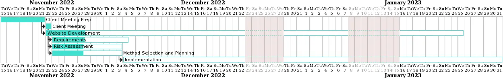
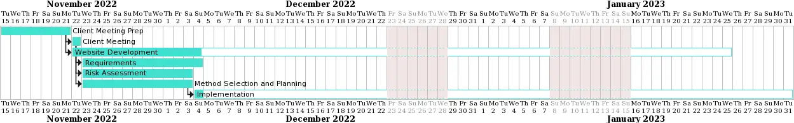
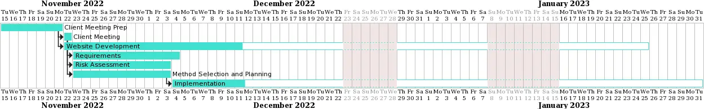
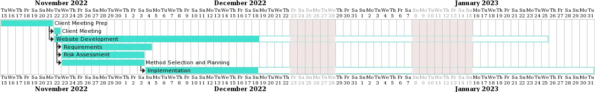
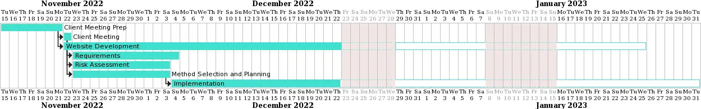
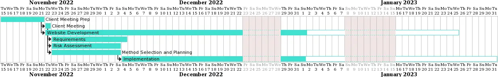
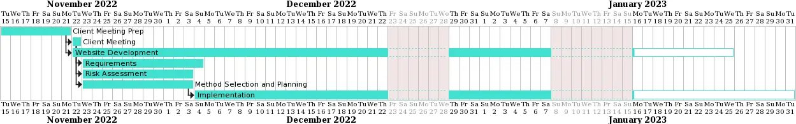
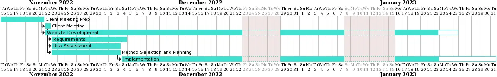
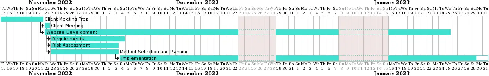
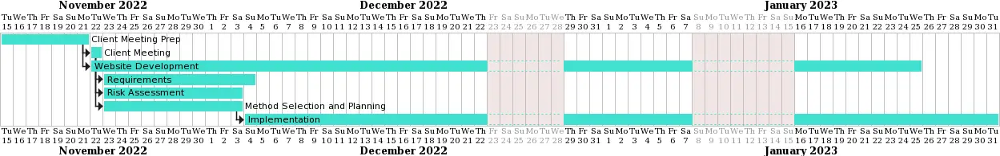

Week 1

The first week was mostly about us meeting and getting to know each other and getting a general idea of what the project was. We did some research into things we might need, such as potential game engines and assets. We started to prepare for the client meeting by brainstorming questions to ask the client about what exactly we needed for the game.
Week 2
In the second week we had the client meeting where we asked the questions we had thought of and used that information along with the product brief to start work on the documentation.
Week 3
Some of us started work on the website, getting the structure of it ready so we could continue updating it with new work as the project progressed. The rest of us started work on other parts of the documentation, such as requirements and the risk assessment. We also made our initial plan for the project and decided on some of the tools we would use.
Week 4
We continued with our documentation for this week, particularly the requirements and risk assessment. We also started implementation. This was mostly deciding which game engine we wanted to use, we chose libGDX, and familiarising ourselves with it by doing a basic tutorial. We also started to plan out the game's architecture, thinking of classes we might need and starting the UML diagram.
Week 5
This was the first week of the Christmas holidays, during which we got less work done than when we were at uni, but we did continue to work on the features for the implementation that we had started the previous week.
Week 6
This week we continued to work on the basic implementation and started to do more research on which assets to use.
Week 7
This was the week of Christmas so we agreed to take a break.
Week 8
We continued to do some work on the implementation of the game, but didn’t get too much done because of the holidays.
Week 9
Week 9 was an exam week, so no snapshots are provided for that period.
Week 10
This week we started to implement collision detection for the game and started to create some tests for the game.We also started an updated UML diagram now that we had done more work on the game and had a better understanding of what classes we needed.
Week 11
This week we continued working on the games implementation, mostly working on the cooking stations and UI. We also updated some of our documentation now that we had a better idea of what the implementation required. Particularly the requirements but also some other sections. We also continued to work on the new UML diagram.
Week 12
This was the last few days, we made some finishing touches to the game and went through all of our deliverables, making any necessary changes and adding them to the website.